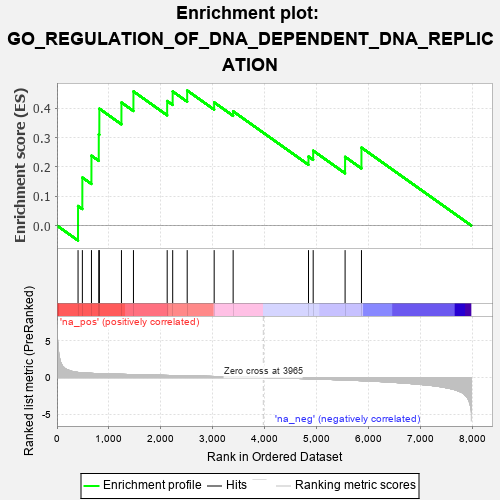
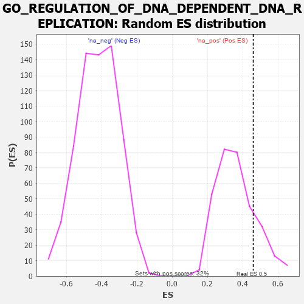

| | | Dataset | 7d |
| Phenotype | NoPhenotypeAvailable |
| Upregulated in class | na_pos |
| GeneSet | GO_REGULATION_OF_DNA_DEPENDENT_DNA_REPLICATION |
| Enrichment Score (ES) | 0.46015424 |
| Normalized Enrichment Score (NES) | 1.2676356 |
| Nominal p-value | 0.19303797 |
| FDR q-value | 0.4331966 |
| FWER p-Value | 1.0 |
Table: GSEA Results Summary

Fig 1: Enrichment plot: GO_REGULATION_OF_DNA_DEPENDENT_DNA_REPLICATION
Profile of the Running ES Score & Positions of GeneSet Members on the Rank Ordered List
| PROBE | GENE SYMBOL | GENE_TITLE | RANK IN GENE LIST | RANK METRIC SCORE | RUNNING ES | CORE ENRICHMENT | | 1 | NBN | | | 405 | 0.696 | 0.0667 | Yes |
| 2 | RFC2 | | | 488 | 0.635 | 0.1636 | Yes |
| 3 | RFC3 | | | 663 | 0.571 | 0.2382 | Yes |
| 4 | BLM | | | 804 | 0.531 | 0.3103 | Yes |
| 5 | RFC4 | | | 815 | 0.528 | 0.3982 | Yes |
| 6 | KAT7 | | | 1240 | 0.440 | 0.4193 | Yes |
| 7 | DACH1 | | | 1471 | 0.395 | 0.4571 | Yes |
| 8 | INO80 | | | 2120 | 0.288 | 0.4243 | Yes |
| 9 | CDK2 | | | 2226 | 0.272 | 0.4570 | Yes |
| 10 | CDT1 | | | 2505 | 0.226 | 0.4602 | Yes |
| 11 | BRCA2 | | | 3024 | 0.146 | 0.4196 | No |
| 12 | RFC5 | | | 3389 | 0.091 | 0.3892 | No |
| 13 | TIPIN | | | 4839 | -0.166 | 0.2352 | No |
| 14 | ATRX | | | 4929 | -0.184 | 0.2551 | No |
| 15 | FGFR1 | | | 5543 | -0.332 | 0.2341 | No |
| 16 | ATG7 | | | 5858 | -0.420 | 0.2656 | No |
Table: GSEA details [plain text format]

Fig 2: GO_REGULATION_OF_DNA_DEPENDENT_DNA_REPLICATION: Random ES distribution
Gene set null distribution of ES for GO_REGULATION_OF_DNA_DEPENDENT_DNA_REPLICATION